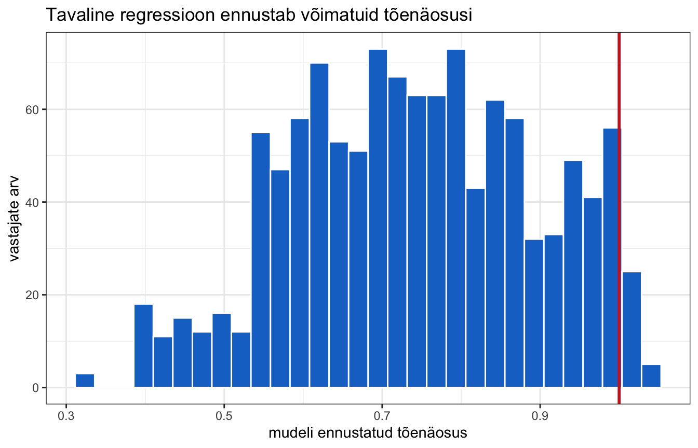
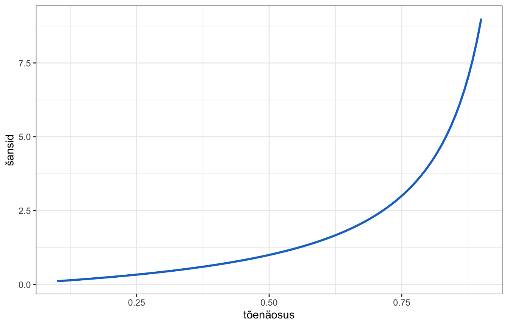
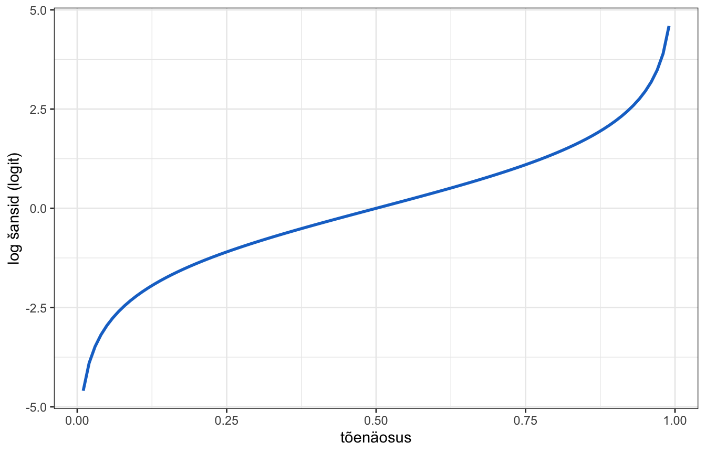
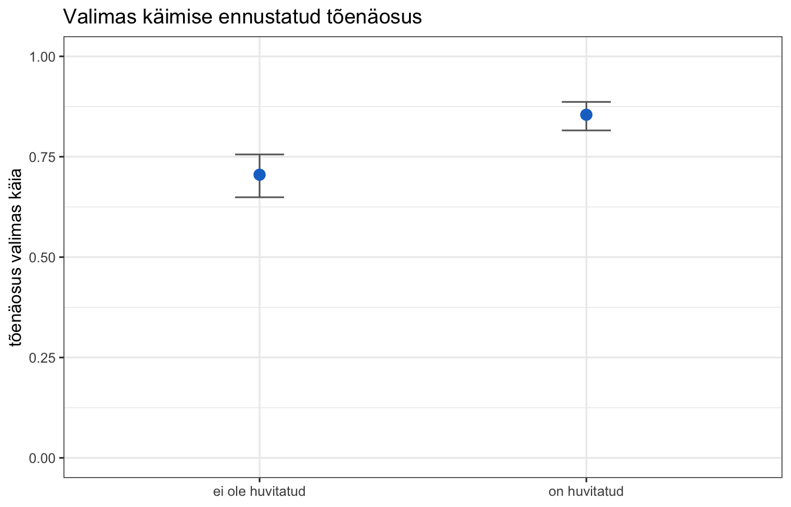
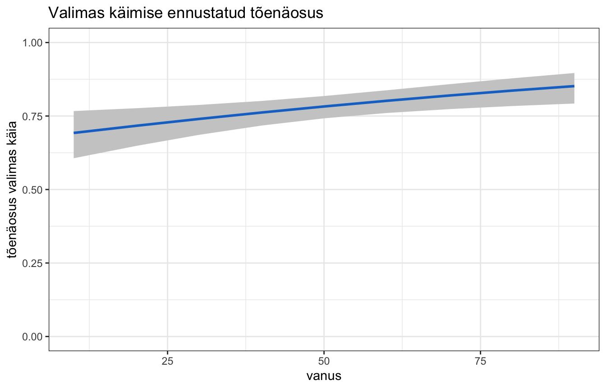

library(dplyr)
library(ggplot2)
library(modelsummary)
library(ggeffects)
library(pscl)
load("data/ess11_ee_clean.rdata")11. Logistiline regressioon
Viimane teema. Siiani on meie sõltuv muutuja olnud alati pidev. Aga väga sageli ei ole ta seda — käis valimas või ei käinud, töötab või ei tööta, jäi haigeks või ei jäänud.
Selliste sõltuvate muutujate jaoks on logistiline regressioon.
Miks tavaline regressioon ei sobi
Meie muutuja valis on kodeeritud 0 ja 1 — täpselt nii, nagu me ta praktikumis 4 ette valmistasime.
table(data$valis, useNA = "ifany")##
## 0 1 <NA>
## 304 871 118Mis juhtuks, kui me teeksime tavalise regressiooni? Sõltuva muutuja väärtused on 0 ja 1, seega ennustaks mudel midagi nende vahel — ja seda võiks tõlgendada tõenäosusena.
Proovime.
halb <- lm(valis ~ huvi_pol + vanus + haridus, data = data)
ennustused <- predict(halb)
range(ennustused)## [1] 0.3236606 1.0408087Vaata ülemist otsa. Mudel ennustab suurimaks väärtuseks 1.041. Tõenäosus ei saa olla suurem kui 1 — see on võimatu.
Ja see ei ole üksikjuhtum. Loeme kokku, mitme inimese kohta mudel võimatu ennustuse annab:
sum(ennustused > 1)## [1] 3535 inimest. Vaatame ka pilti.
joonise_andmed <- data.frame(ennustus = ennustused)
ggplot(joonise_andmed, aes(x = ennustus)) +
geom_histogram(bins = 30, fill = "dodgerblue3", color = "white") +
geom_vline(xintercept = 1, color = "firebrick3", linewidth = 1) +
labs(
x = "mudeli ennustatud tõenäosus",
y = "vastajate arv",
title = "Tavaline regressioon ennustab võimatuid tõenäosusi"
) +
theme_bw()
Punane joon on tõenäosuse ülempiir. Osa ennustusi jääb sellest paremale.
Probleem on põhimõtteline. Sirge joon läheb lõputult üles ja alla, aga tõenäosus on piiritletud nulli ja ühe vahele. Sirge ei oska kuskil peatuda. Meil on vaja midagi, mis otstes ära kõverduks — lameneks, kui läheneb nullile või ühele.
Arutelu. Mudel ennustas 35 inimese kohta tõenäosuse, mis on üle ühe. Miks on see tõsisem probleem kui lihtsalt “mõned arvud on veidi valed”? Mõtle sellele, mida sa nende ennustustega peale hakkaksid.
Tõenäosus, šansid ja logit
Probleem oli see, et tõenäosus on piiratud nulli ja ühe vahele, aga sirge joon ei ole. Lahendus on skaala ümber vahetada: selle asemel et ennustada tõenäosust otse, ennustame midagi muud, mis on tõenäosusega üks-ühele seotud, aga millel piire ei ole.
Kuidas see käib? Kahes sammus.
Esimene samm: tõenäosuse asemel šansid.
Šansid on igapäevakeelest tuttavad — “šansid on kolm ühele”. See tähendab: kolm korda tõenäolisem, et juhtub, kui et ei juhtu. Kihlvedudes ja spordis kasutatakse just seda keelt.
Šansid saadakse tõenäosusest lihtsalt: kui suur on tõenäosus, et juhtub, võrreldes tõenäosusega, et ei juhtu. Kui tõenäosus on 0,75, siis šansid on kolm ühele. Kui tõenäosus on 0,5, siis šansid on üks ühele.
Mis sellega võidetakse? Tõenäosus lõppes ühe juures ära. Šansid ei lõpe kunagi — nad kasvavad lõpmatuseni. Ülemine piir on kadunud.
Alumine piir on aga alles: šansid ei saa olla negatiivsed. Nad lähenevad nullile, aga ei jõua sinna kunagi.
Teine samm: šanssidest logaritm.
Logaritmi võtmine on tehe, mis teeb ühe kindla asja: ta venitab nullilähedased arvud laiali ja surub suured arvud kokku. Arvudest, mis olid nulli ja ühe vahel, saavad negatiivsed arvud; arvudest, mis olid ühest suuremad, saavad positiivsed.
Nii kaob ka alumine piir. Tulemus võib olla ükskõik milline arv — nii negatiivne kui positiivne, ilma otsteta.
Seda lõpptulemust nimetatakse logitiks. Ta on lihtsalt tõenäosus, mis on kahe sammuga ümber pandud skaalale, millel ei ole otsi. Ja just sellel skaalal saab tavaline sirge joon oma tööd teha.
| Piirid | Kas sirge sobib? | |
|---|---|---|
| tõenäosus | 0 kuni 1 | ei |
| šansid | 0 kuni lõpmatus | ei |
| logit | piirideta | jah |
Kõige olulisem: see teisendus ei muuda infot, ainult skaalat. Igast logitist saab tagasi arvutada šansid ja igast šansist tagasi tõenäosuse. Midagi ei lähe kaotsi.
Mida sa pead teadma tulemuste lugemiseks
Sina ei pea seda teisendust ise tegema. R teeb ta ära. Sina pead teadma kolme asja.
Esiteks: koefitsiendi märk. See on kõige olulisem ja seda saab lugeda otse tabelist.
- Positiivne koefitsient logistilise regressiooni mudelis tähendab, et selle muutuja kasvades kasvab tõenäosus, et sõltuv muutuja on 1.
- Negatiivne koefitsient tähendab, et tõenäosus kahaneb.
Teiseks: koefitsiendi arvulist väärtust ei saa otse tõlgendada. Ta on logiti skaalal ja lause “logit kasvab 0,8 võrra” ei tähenda inimese jaoks midagi. Selle jaoks on kaks lahendust, mida allpool vaatame: šansside suhe ja joonis.
Kolmandaks: p-väärtust loetakse täpselt sama moodi nagu tavalises regressioonis. Nullhüpotees on, et koefitsient on null ehk seost ei ole.
Jäta siinkohal meelde üks asi: tee joonis. Ennustatud tõenäosuste joonis ütleb sulle ja su lugejale rohkem kui ükski koefitsient. Sellel joonisel on y-teljel tavaline tõenäosus, mitte logit, ja teda saab lugeda ilma igasuguse teisenduseta.
Vaatame, kust logit tuleb. Teekond käib kolmes sammus.
Samm 1: tõenäosuse asemel šansid.
Šansid on tõenäosus, et midagi juhtub, jagatud tõenäosusega, et ei juhtu:
\[\text{šansid} = \frac{Pr(y=1)}{1 - Pr(y=1)}\]
Kui tõenäosus on piiratud 0 ja 1 vahele, siis šansid ulatuvad nullist lõpmatuseni. Nad ei saa olla negatiivsed. Oleme poolel teel.
Joonistame selle. Funktsioon seq() teeb arvujada — argument length.out ütleb, mitu arvu jadas olema peab. Funktsioon geom_line() joonistab punktide asemel joone.
prob <- seq(0.1, 0.9, length.out = 100)
odds <- prob / (1 - prob)
sansside_andmed <- data.frame(prob = prob, odds = odds)
ggplot(sansside_andmed, aes(prob, odds)) +
geom_line(linewidth = 1, color = "dodgerblue3") +
labs(x = "tõenäosus", y = "šansid") +
theme_bw()
Samm 2: šanssidest logaritm.
Logaritmi võtmine tähendab arvu väljendamist mõne teise arvu astmena. Naturaallogaritmi alus on matemaatiline konstant \(e\), mille väärtus on umbes 2,71.
log(1)## [1] 0log(2.71)## [1] 0.9969486log(10, base = 10)## [1] 1Logaritmi saab võtta igast nullist suuremast arvust ja tulemus võib olla miinus lõpmatusest lõpmatuseni. Arvu 1 logaritm on null; alla ühe on negatiivne, üle ühe positiivne.
Täpselt see, mida vaja. Šansside logaritmi nimetatakse logitiks.
prob <- seq(0.01, 0.99, length.out = 100)
odds <- prob / (1 - prob)
logit_andmed <- data.frame(prob = prob, logit = log(odds))
ggplot(logit_andmed, aes(prob, logit)) +
geom_line(linewidth = 1, color = "dodgerblue3") +
labs(x = "tõenäosus", y = "log šansid (logit)") +
theme_bw()
Nüüd on skaala piiramatu ja tavaline lineaarne mudel saab temaga hakkama.
Samm 3: tagasi.
Logaritmi vastandtehe on astendamine. Funktsioon exp() tõstab \(e\) antud astmele.
exp(1)## [1] 2.718282exp(0)## [1] 1exp(-1)## [1] 0.3678794Nii saame logitist tagasi šansid ja šanssidest tagasi tõenäosuse:
\[\text{tõenäosus} = \frac{\text{šansid}}{1 + \text{šansid}}\]
Kokkuvõttes: logistiline regressioon ennustab logitit, sest logit käitub nii, nagu lineaarne mudel vajab. Tõlgendamiseks teeme tagasitee.
Mudeli sobitamine
Logistilise regressiooni funktsioon on glm() — generalized linear model, üldistatud lineaarne mudel. Valem kirjutatakse täpselt nagu lm() puhul, kuid lisaks tuleb argumendiga family öelda, millist sõltuva muutuja teisendust kasutada.
Väärtus "binomial" tähendab, et sõltuv muutuja on binaarne, ja see annab logit-mudeli.
Ennustame, kas inimene käis valimas, tema vanuse, soo, hariduse ja poliitikahuvi põhjal.
logit1 <- glm(
valis ~ vanus + sugu + haridus + huvi_pol,
family = "binomial",
data = data
)
summary(logit1)##
## Call:
## glm(formula = valis ~ vanus + sugu + haridus + huvi_pol, family = "binomial",
## data = data)
##
## Coefficients:
## Estimate Std. Error z value Pr(>|z|)
## (Intercept) -1.731733 0.301076 -5.752 8.83e-09 ***
## vanus 0.011713 0.004147 2.824 0.00474 **
## sugunaine -0.109644 0.148560 -0.738 0.46049
## haridus 0.403180 0.049425 8.157 3.42e-16 ***
## huvi_pol 0.898893 0.155360 5.786 7.21e-09 ***
## ---
## Signif. codes: 0 '***' 0.001 '**' 0.01 '*' 0.05 '.' 0.1 ' ' 1
##
## (Dispersion parameter for binomial family taken to be 1)
##
## Null deviance: 1330.6 on 1163 degrees of freedom
## Residual deviance: 1178.1 on 1159 degrees of freedom
## (129 observations deleted due to missingness)
## AIC: 1188.1
##
## Number of Fisher Scoring iterations: 4Tulemuste tõlgendamine
Koefitsiendid on logiti skaalal. Nagu öeldud, ei ole nende arvuline väärtus otseselt mõistetav — aga märk on.
Vanus, haridus ja poliitikahuvi on kõik positiivsed ja statistiliselt olulised: vanemad, haritumad ja poliitikast rohkem huvitatud inimesed käivad suurema tõenäosusega valimas.
Šansside suhe
Logiti koefitsienti ei saa otse tõlgendada. Aga kui teha talle logaritmi vastandtehe funktsiooniga exp(), saame arvu, mida saab — šansside suhte (odds ratio).
koefitsiendid <- coef(logit1)
sansside_suhted <- exp(koefitsiendid)
round(sansside_suhted, 3)## (Intercept) vanus sugunaine haridus huvi_pol
## 0.177 1.012 0.896 1.497 2.457Kuidas šansside suhet lugeda?
Kõige olulisem on üks vahe, mida aetakse pidevalt segamini.
Logiti koefitsient ütleb, mitme VÕRRA logit muutub. Šansside suhe ütleb, mitu KORDA šansid muutuvad.
Esimene on liitmine, teine on korrutamine. Sellepärast on nende võrdluspunktid ka erinevad: koefitsiendi puhul on “seost ei ole” väärtus null, šansside suhte puhul üks.
Seega:
| Šansside suhe | Mida tähendab |
|---|---|
| üle 1 | šansid kasvavad — seos on positiivne |
| täpselt 1 | seost ei ole |
| alla 1 | šansid kahanevad — seos on negatiivne |
Näide meie mudelist. Poliitikahuvi šansside suhe on 2.46. Muutuja on binaarne: 1 tähendab poliitikast huvitatud, 0 mitte huvitatud.
Tõlgendus: poliitikast huvitatud inimeste šansid valimas käia on 2.46 korda suuremad kui mittehuvitatutel, kui vanus ja haridus on samad.
Vanuse šansside suhe on 1.012. See tundub olematu, aga pane tähele skaalat: ta käib ühe eluaasta kohta. Kümne aasta kohta tuleb ta astmesse tõsta, mitte kümnega korrutada — ja siis on ta juba 1.12.
Kaks lõksu, mille otsa komistatakse pidevalt.
Esiteks: šansid ei ole tõenäosus. Kui šansid kahekordistuvad, siis tõenäosus ei kahekordistu. Kui tõenäosus oli 0,5, siis šansid olid üks ühele; kahekordistudes saavad nad kaks ühele, mis vastab tõenäosusele 0,67 — mitte 1,0. Ja mida lähemal on tõenäosus ühele, seda vähem ta üldse muutub.
Teiseks: “kaks korda suuremad šansid” ei tähenda “kaks korda tõenäolisem”. Ajakirjanduses aetakse neid pidevalt segamini ja teadustöös ei tohi seda teha.
Just sellepärast on ennustatud tõenäosuste joonis nii kasulik — seal on tavaline tõenäosus, mille tõlgendamisel eksida ei saa.
Harjutus. Arvuta hariduse šansside suhe kolme haridusastme kohta korraga (ehk tõsta ta kolmandasse astmesse). Kui palju kasvavad valimas käimise šansid, kui haridustase on kolm astet kõrgem?
Ennustatud tõenäosused
Kõige arusaadavam viis on ikkagi joonis. Sama funktsioon, mida praktikumis 10 kasutasime, töötab ka siin — ja ta teeb tagasiteisenduse tõenäosusteks ise ära, nii et y-teljel on tavaline tõenäosus, mitte logit.
Joonisel kasutame ka funktsiooni ylim(), mis fikseerib y-telje ulatuse. Paneme ta 0-st 1-ni, sest tõenäosus saabki ainult selles vahemikus olla — nii on kohe näha, kui suur osa võimalikust skaalast tegelikult kasutuses on.
ennustus_huvi <- predict_response(logit1, terms = "huvi_pol")
huvi_tabel <- as.data.frame(ennustus_huvi)
huvi_tabel$x <- factor(huvi_tabel$x)
ggplot(huvi_tabel, aes(x = x, y = predicted)) +
geom_errorbar(
aes(ymin = conf.low, ymax = conf.high),
width = 0.15,
color = "grey40"
) +
geom_point(size = 3, color = "dodgerblue3") +
scale_x_discrete(labels = c("ei ole huvitatud", "on huvitatud")) +
ylim(0, 1) +
labs(
x = NULL,
y = "tõenäosus valimas käia",
title = "Valimas käimise ennustatud tõenäosus"
) +
theme_bw()
Siit on kohe näha, mida mudel ütleb: kõige väiksema poliitikahuviga inimeste seas käib valimas umbes 55%, kõige suurema huviga inimeste seas üle 90%.
ennustus_vanus <- predict_response(logit1, terms = "vanus")
vanus_tabel <- as.data.frame(ennustus_vanus)
ggplot(vanus_tabel, aes(x = x, y = predicted)) +
geom_ribbon(aes(ymin = conf.low, ymax = conf.high), fill = "grey80") +
geom_line(linewidth = 1, color = "dodgerblue3") +
ylim(0, 1) +
labs(
x = "vanus",
y = "tõenäosus valimas käia",
title = "Valimas käimise ennustatud tõenäosus"
) +
theme_bw()
Pane tähele, et joon ei ole sirge — ta on otstest lamedam. Just see oligi logiti mõte.
Mudeli sobivus
Logistilise regressiooni puhul ei saa arvutada tavalist R-ruutu. Selle asemel on pseudo R-ruut — arv, mis on tõlgendatav sarnaselt, kuid mitte päris samamoodi.
Neid on mitu varianti ja nad on nimetatud oma väljamõtlejate järgi. Arvutab neid funktsioon pR2() paketist pscl.
# pR2() trükib arvutamise ajal teate null-mudeli sobitamise kohta.
# suppressMessages() vaigistab selle -- tulemus ise ei muutu.
suppressMessages(pR2(logit1))## fitting null model for pseudo-r2## llh llhNull G2 McFadden r2ML r2CU
## -589.0625075 -665.3168512 152.5086874 0.1146136 0.1228008 0.1802743Kolm viimast arvu on pseudo R-ruudud: McFadden oma nime all, Cox ja Snell nime all r2ML ning Nagelkerke nime all r2CU.
Millist kasutada? Lõplikku konsensust ei ole. McFadden on kõige tavalisem ja jääb oma hinnangult tavaliselt keskele — piirdu temaga.
NB! McFadden pseudo R-ruut on tavaliselt palju väiksem kui tavaline R-ruut oleks, kui tema arvutamine antud juhul võimalik oleks. See on selle tõlgendamine samaväärselt tavalise R-ruuduga natuke komplitseeritud. Väärtus 0,1 on logistilise mudeli puhul juba päris hea. Ära ehmata.
Klassifitseerimistäpsus
Teine viis mudelit hinnata on küsida: kui hästi ta juhtumeid ära arvab?
Ennustatud tõenäosused saab funktsiooniga fitted(). Kui neid ümardada, saame ennustuse 0 või 1 — ümardamise piir on 0,5.
toenaosused <- fitted(logit1)
ennustatud <- round(toenaosused)
# Mudel jättis puuduvate väärtustega read välja, seega peame võtma
# tegelikud väärtused mudeli enda andmetest, mitte algsest tabelist.
tegelik <- logit1$model$valis
tabel <- table(ennustatud, tegelik)
tabel## tegelik
## ennustatud 0 1
## 0 62 28
## 1 239 835Miks me võtame tegelikud väärtused mudeli seest? Sest
glm()viskas puuduvate väärtustega read välja jafitted()annab tulemused ainult alles jäänud ridade kohta. Kui võttadata$valis, oleksid vektorid eri pikkusega ja tabel tuleks vale.Juhtumite arvu mudelis annab
nobs().
nobs(logit1)## [1] 1164Sellest tabelist saab kaks olulist arvu.
- Sensitiivsus — kui suure osa tegelikest valijatest mudel õigesti ära tundis.
- Spetsiifilisus — kui suure osa tegelikest mittevalijatest mudel õigesti ära tundis.
sensitiivsus <- tabel[2, 2] / sum(tabel[, 2])
spetsiifilisus <- tabel[1, 1] / sum(tabel[, 1])
round(c(sensitiivsus = sensitiivsus, spetsiifilisus = spetsiifilisus), 3)## sensitiivsus spetsiifilisus
## 0.968 0.206Sensitiivsus on väga kõrge, spetsiifilisus madal. Mudel tunneb valijad hästi ära, aga mittevalijaid peaaegu üldse mitte.
Miks? Sest valijaid on meie andmetes palju rohkem (871 vastu 304). Mudelil on “turvaline” ennustada kõigi kohta, et nad käivad valimas.
Mõtle sellele koroonatesti näitel. Sensitiivsus on testi võime leida üles haiged inimesed. Spetsiifilisus on tema võime mitte anda valepositiivseid. Test, mis ütleb kõigi kohta “haige”, on 100% sensitiivne ja 0% spetsiifiline — ja täiesti kasutu.
Seetõttu tuleb neid alati koos vaadata. Üksik arv ei ütle midagi.
Proovime paremat mudelit — lisame juurde muutujad, mis võiksid valimas käimist samuti seletada.
logit2 <- glm(
valis ~ vanus + sugu + haridus + huvi_pol + usaldus_pol +
rahulolu_dem + sissetulek,
family = "binomial",
data = data
)
summary(logit2)##
## Call:
## glm(formula = valis ~ vanus + sugu + haridus + huvi_pol + usaldus_pol +
## rahulolu_dem + sissetulek, family = "binomial", data = data)
##
## Coefficients:
## Estimate Std. Error z value Pr(>|z|)
## (Intercept) -3.146103 0.444683 -7.075 1.50e-12 ***
## vanus 0.021781 0.005199 4.190 2.79e-05 ***
## sugunaine -0.081661 0.166845 -0.489 0.624527
## haridus 0.284017 0.057734 4.919 8.68e-07 ***
## huvi_pol 0.660853 0.173281 3.814 0.000137 ***
## usaldus_pol 0.077645 0.043407 1.789 0.073653 .
## rahulolu_dem 0.114065 0.037725 3.024 0.002498 **
## sissetulek 0.140361 0.035734 3.928 8.57e-05 ***
## ---
## Signif. codes: 0 '***' 0.001 '**' 0.01 '*' 0.05 '.' 0.1 ' ' 1
##
## (Dispersion parameter for binomial family taken to be 1)
##
## Null deviance: 1128.13 on 1034 degrees of freedom
## Residual deviance: 963.92 on 1027 degrees of freedom
## (258 observations deleted due to missingness)
## AIC: 979.92
##
## Number of Fisher Scoring iterations: 5Kas ta on parem? Vaatame kõiki kolme sobivusnäitajat korraga.
Selle asemel et sama koodi kaks korda kirjutada, teeme oma funktsiooni. Funktsiooni loomine käib nii: nimi, <-, sõna function, sulgudes sisendite nimed ja looksulgudes see, mida teha. Viimane rida funktsiooni sees on see, mille ta tagastab.
Nimetame ta sobivus() — ta võtab sisendiks mudeli ja annab tagasi kolm sobivusnäitajat.
sobivus <- function(mudel) {
toenaosused <- fitted(mudel)
ennustatud <- round(toenaosused)
tegelik <- mudel$model[[1]]
tabel <- table(ennustatud, tegelik)
sens <- tabel["1", "1"] / sum(tabel[, "1"])
spets <- tabel["0", "0"] / sum(tabel[, "0"])
# pR2() trükib teate null-mudeli sobitamise kohta; suppressMessages() vaigistab ta
mcf <- suppressMessages(pR2(mudel))[["McFadden"]]
tulemus <- c(
McFadden = mcf,
sensitiivsus = sens,
spetsiifilisus = spets,
n = nobs(mudel)
)
round(tulemus, 3)
}Ja rakendame teda mõlemale mudelile.
sobivus(logit1)## fitting null model for pseudo-r2## McFadden sensitiivsus spetsiifilisus n
## 0.115 0.968 0.206 1164.000sobivus(logit2)## fitting null model for pseudo-r2## McFadden sensitiivsus spetsiifilisus n
## 0.146 0.961 0.267 1035.000Pseudo R-ruut kasvas 0.115-lt 0.146-le ja spetsiifilisus 0.206-lt 0.267-le. Mudel tunneb mittevalijaid paremini ära kui enne, kuigi endiselt halvasti.
Arutelu. Juhtumite arv langes 1164-lt 1035-le. Miks? Ja mida see tähendab nende kahe mudeli võrdlemise seisukohalt?
Tulemuste esitamine
Logistilise regressiooni tabel peab sisaldama rohkem kui tavaline regressioonitabel: lisaks koefitsientidele ka šansside suhted ja mudeli sobivuse näitajad.
Pseudo R-ruutu, sensitiivsust ja spetsiifilisust modelsummary() ise ei tunne. Aga talle saab õpetada: kui defineerida funktsioon nimega glance_custom.glm, siis kutsub modelsummary() teda iga logistilise mudeli kohta ja lisab tulemused tabeli alaossa.
Funktsioon sprintf() vormindab arvu tekstiks. Kirjapilt "%.3f" tähendab “arv kolme komakohaga”. Seda on vaja, et tabelis oleks igal pool ühepalju komakohti.
Funktsioon registerS3method() ütleb R-ile, et see uus funktsioon tuleb kasutusele võtta alati, kui modelsummary() kohtab logistilist mudelit.
glance_custom.glm <- function(x, ...) {
n <- sobivus(x)
data.frame(
McFadden = sprintf("%.3f", n[["McFadden"]]),
Sensitiivsus = sprintf("%.3f", n[["sensitiivsus"]]),
Spetsiifilisus = sprintf("%.3f", n[["spetsiifilisus"]])
)
}
registerS3method("glance_custom", "glm", glance_custom.glm)Nüüd teeme tabeli. Kaks mudelit kõrvuti, koefitsiendid logiti skaalal.
nimed <- c(
"vanus" = "Vanus (aastates)",
"sugunaine" = "Sugu: naine (ref. mees)",
"haridus" = "Haridustase (1-7)",
"huvi_pol" = "Huvitatud poliitikast (ref. ei ole)",
"usaldus_pol" = "Usaldus poliitikute vastu (0-10)",
"rahulolu_dem" = "Rahulolu demokraatiaga (0-10)",
"sissetulek" = "Sissetulekudetsiil (1-10)",
"(Intercept)" = "Vabaliige"
)
modelsummary(
list("Mudel 1" = logit1, "Mudel 2" = logit2),
coef_map = nimed,
gof_map = c("nobs", "McFadden", "Sensitiivsus", "Spetsiifilisus"),
stars = c("*" = 0.05, "**" = 0.01, "***" = 0.001),
title = "Valimas käimist ennustavad tegurid (logiti koefitsiendid)"
)## fitting null model for pseudo-r2
## fitting null model for pseudo-r2| Mudel 1 | Mudel 2 | |
|---|---|---|
| * p < 0.05, ** p < 0.01, *** p < 0.001 | ||
| Vanus (aastates) | 0.012** | 0.022*** |
| (0.004) | (0.005) | |
| Sugu: naine (ref. mees) | -0.110 | -0.082 |
| (0.149) | (0.167) | |
| Haridustase (1-7) | 0.403*** | 0.284*** |
| (0.049) | (0.058) | |
| Huvitatud poliitikast (ref. ei ole) | 0.899*** | 0.661*** |
| (0.155) | (0.173) | |
| Usaldus poliitikute vastu (0-10) | 0.078 | |
| (0.043) | ||
| Rahulolu demokraatiaga (0-10) | 0.114** | |
| (0.038) | ||
| Sissetulekudetsiil (1-10) | 0.140*** | |
| (0.036) | ||
| Vabaliige | -1.732*** | -3.146*** |
| (0.301) | (0.445) | |
| Num.Obs. | 1164 | 1035 |
| McFadden | 0.115 | 0.146 |
| Sensitiivsus | 0.968 | 0.961 |
| Spetsiifilisus | 0.206 | 0.267 |
Kõik sobivusnäitajad on nüüd tabelis olemas ja iga mudeli kohta eraldi.
Ja šansside suhted? Nende jaoks teeme eraldi tabeli argumendiga exponentiate = TRUE.
modelsummary(
list("Mudel 1" = logit1, "Mudel 2" = logit2),
exponentiate = TRUE,
coef_map = nimed[names(nimed) != "(Intercept)"],
gof_map = c("nobs", "McFadden"),
stars = c("*" = 0.05, "**" = 0.01, "***" = 0.001),
title = "Valimas käimist ennustavad tegurid (šansside suhted)"
)## fitting null model for pseudo-r2
## fitting null model for pseudo-r2| Mudel 1 | Mudel 2 | |
|---|---|---|
| * p < 0.05, ** p < 0.01, *** p < 0.001 | ||
| Vanus (aastates) | 1.012** | 1.022*** |
| (0.004) | (0.005) | |
| Sugu: naine (ref. mees) | 0.896 | 0.922 |
| (0.133) | (0.154) | |
| Haridustase (1-7) | 1.497*** | 1.328*** |
| (0.074) | (0.077) | |
| Huvitatud poliitikast (ref. ei ole) | 2.457*** | 1.936*** |
| (0.382) | (0.336) | |
| Usaldus poliitikute vastu (0-10) | 1.081 | |
| (0.047) | ||
| Rahulolu demokraatiaga (0-10) | 1.121** | |
| (0.042) | ||
| Sissetulekudetsiil (1-10) | 1.151*** | |
| (0.041) | ||
| Num.Obs. | 1164 | 1035 |
| McFadden | 0.115 | 0.146 |
Miks kaks eraldi tabelit, mitte kaks veergu ühes? Kui panna sama mudel tabelisse kaks korda — üks kord koefitsientidena ja teine kord šansside suhetena — siis korratakse ka kõiki sobivusnäitajaid. Need on mõlemal veerul täpselt samad, sest tegemist on ühe ja sama mudeliga. Tabelisse tekib mõttetut kordust.
Vabaliige on šansside suhete tabelist välja jäetud, sest tema eksponent ei ole sisuliselt tõlgendatav.
Ja tabeli saab Wordi täpselt nii, nagu eelmises praktikumis.
modelsummary(
list("Koefitsiendid (logit)" = logit1, "Šansside suhted" = logit1),
exponentiate = c(FALSE, TRUE),
coef_map = nimed,
gof_map = c("nobs", "aic"),
stars = c("*" = 0.05, "**" = 0.01, "***" = 0.001),
output = "logit_tabel.docx"
)Kuidas seda kirja panna
NõuanneKuidas seda kirja panna
Logistilise regressiooni esitamisel tuleb arvestada kolme asja, mida tavalise regressiooni puhul ei olnud: šansside suhted, pseudo R-ruut ja klassifitseerimistäpsus.
Valimas käimise ennustamiseks koostati logistiline regressioonimudel (tabel 2), kuhu kaasati 1170 vastajat. Kõige tugevam seos ilmnes poliitikahuviga: iga punkti võrra suurem huvi poliitika vastu suurendab valimas käimise šansse 2,1 korda (p < 0,001). Statistiliselt oluline oli ka vanus — iga eluaasta suurendab šansse 1,03 korda (p < 0,001) — ning haridustase (šansside suhe 1,14; p < 0,01). Soo puhul olulist seost ei ilmnenud.
Mudeli seletusvõime on tagasihoidlik (McFadden pseudo R² = 0,09). Mudel klassifitseerib valijad hästi (sensitiivsus 98%), kuid mittevalijaid praktiliselt ei tuvasta (spetsiifilisus 8%).
Neli asja, mille peale mõelda:
- Ütle, mis on sõltuva muutuja puhul kodeeritud kui 1. Ilma selleta ei tea lugeja, kumba suunda koefitsient näitab.
- Šansside suhe on “korda”, mitte “võrra”. Šansside suhe 2,1 tähendab kahekordistumist, mitte 2,1 protsendipunkti.
- Ära aja segamini šansse ja tõenäosust. Šansside kahekordistumine ei tähenda tõenäosuse kahekordistumist.
- Raporteeri sensitiivsus ja spetsiifilisus koos. Üksik arv on eksitav.
Kursuse lõpp
Sellega on käesolev kursus läbi.
Sa oskad nüüd võtta päris andmestiku, teha temast analüüsivalmis andmestiku, kirjeldada oma muutujaid, hinnata ebakindlust, testida hüpoteese ning koostada ja esitada regressioonimudeleid nii pideva kui binaarse sõltuva muutuja jaoks.
See on väga suur hulk teadmisi, sa võib auga enda üle uhke olla!
Sellest piisab, et teha oma bakalaureusetöö jaoks kohane statistiline analüüs. Kuid laiemas pildis on see alles algus — statistilise analüüsi maailm on peaaegu piiritu ja pidevalt arenev. Selle valdkonna baasteadmised jäävad aga alati samaks ning nende põhjal on alati võimalik edasi liikuda.
Harjutused
1. Oma mudel. Sobita logistiline mudel, kus sõltuv muutuja on valis ja sõltumatud on sinu enda valitud kolm muutujat. Põhjenda valikut.
2. Šansside suhted. Arvuta oma mudeli šansside suhted ja tõlgenda neist kaks sõnadega.
3. Joonis. Tee ennustatud tõenäosuste joonis ühe sõltumatu muutuja kohta. Kui palju tõenäosus skaala ühest otsast teise muutub?
4. Mudeli sobivus. Arvuta oma mudeli pseudo R-ruut, sensitiivsus ja spetsiifilisus. Kumb neist kahest on kõrgem ja miks?
5. Kokkuvõte. Kirjuta oma mudeli tulemused välja nii, nagu nad võiksid olla bakalaureusetöös.